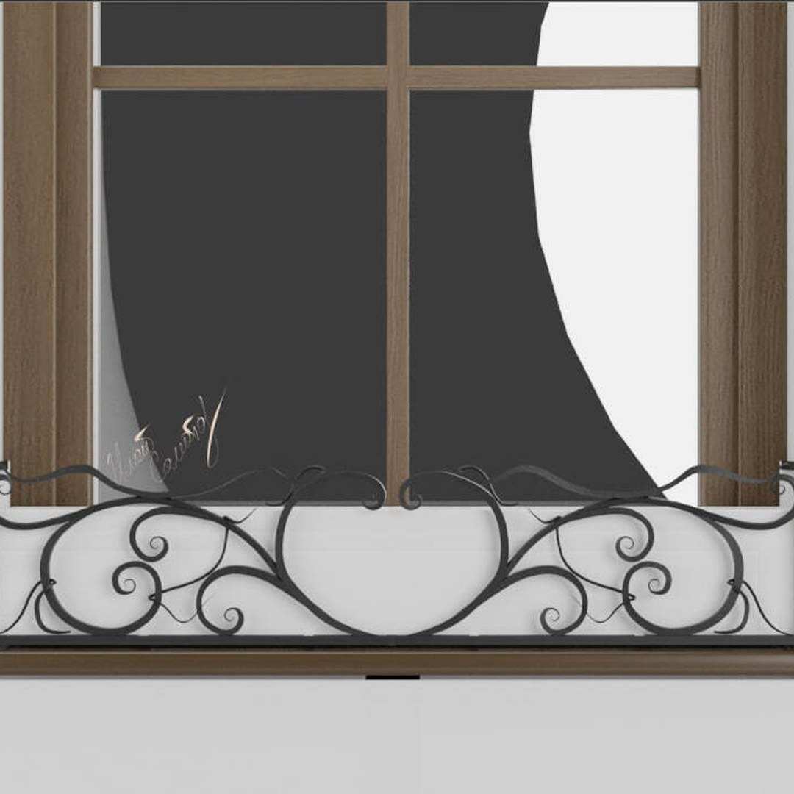
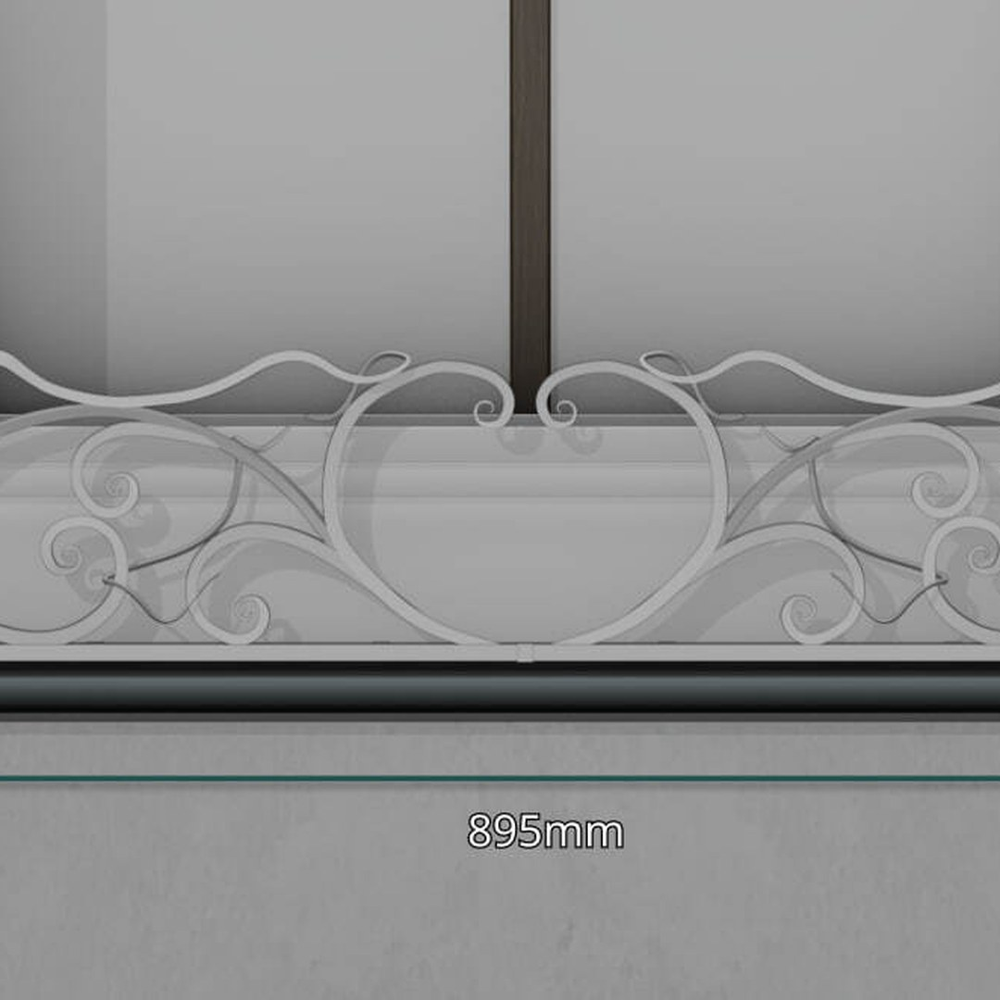
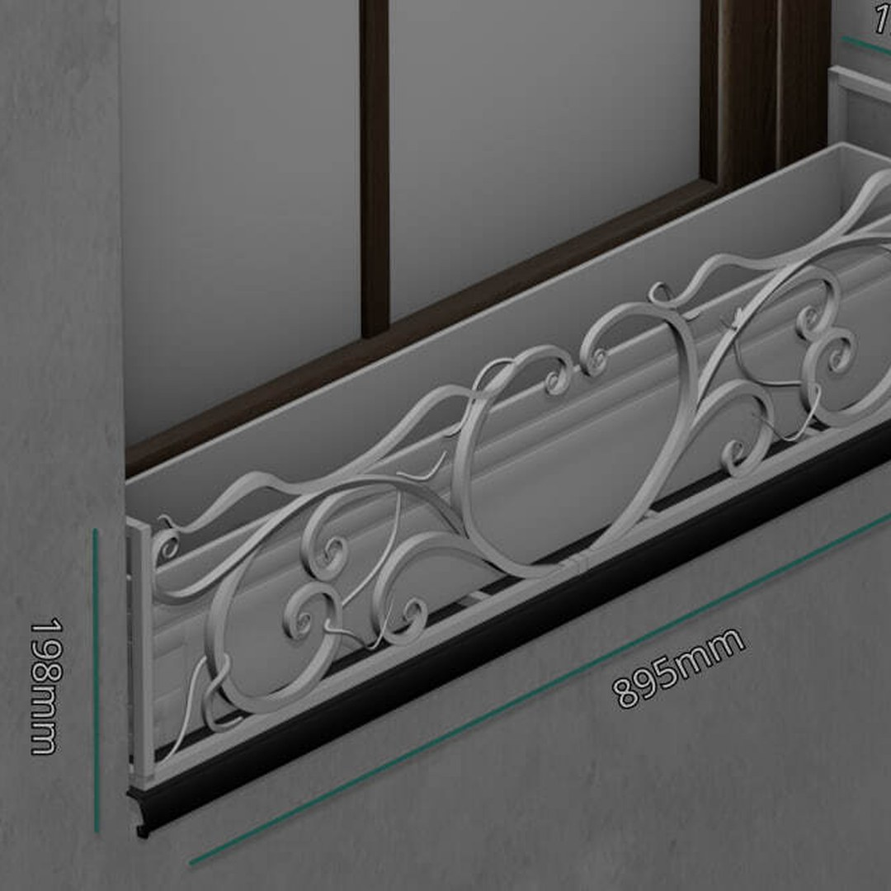
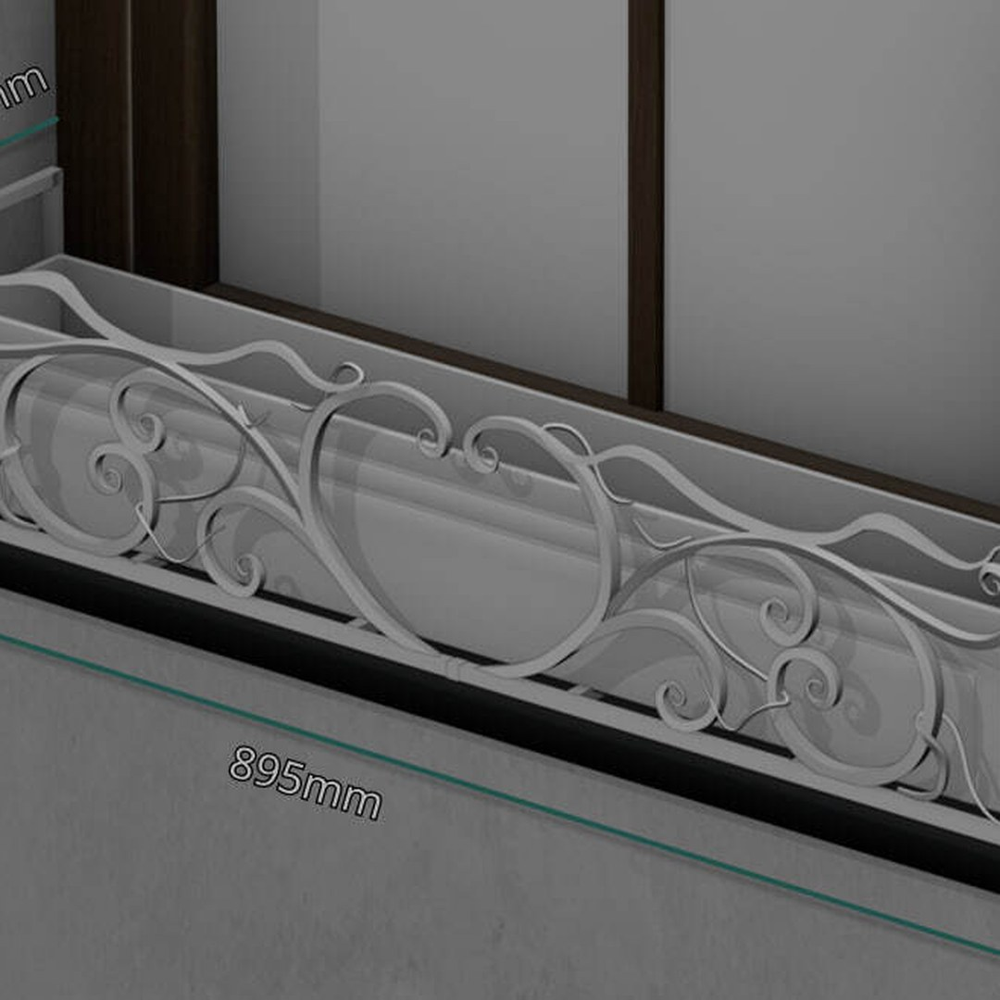
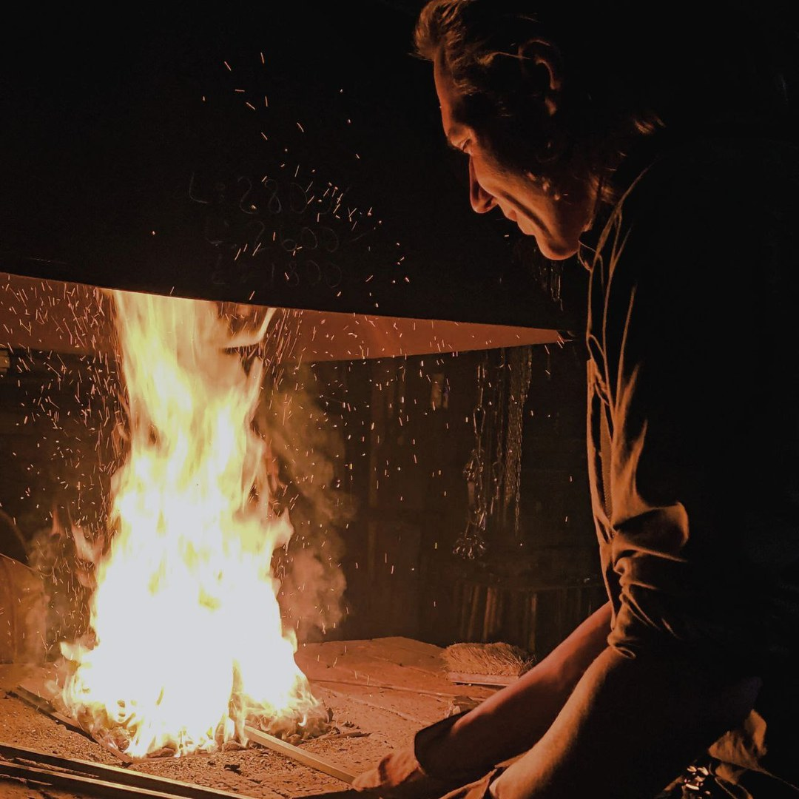

Статья · 15.01.2026
Открытое Сердце
Эскиз кашпо — рубрика «Эскизы»
— Накопилось достаточно эскизов!
— А достаточно — это сколько?
— Достаточно для того, чтобы делать из этого контент.
В общем, я почти что писатель. Ну, если учесть, что в школе я активно писал романы и послушно складывал их в стол — подальше от умов, глаз и всего того, что могло меня покритиковать.
А годы шли, и я старательно черствел к критике. И вот в моём разуме созрело желание выкладывать свои эскизы… Поправка на ветер и юриспруденцию: те эскизы, которые не обременены словом или строчкой в договоре.
Поэтому сим разрезаю красную ленточку и открываю рубрику «Эскизы» на своём Telegram‑канале. Тут я подробно буду описывать, чем вдохновлялся, от чего трясся и как вообще такое могло появиться на свет.
Работа
Открывает рубрику работа «Открытое сердце».
Эскиз выполнен исходя из примеров и пожеланий заказчика. В углах кашпо можно заметить буквы «Л» — отсылка к имени собственника. Сердце в центре символизирует открытость хозяев дома, а верхние безрамочные решения подчёркивают воздушность.
Крепление — боковое, в проём. Материал — 10‑мм квадрат и рамка из 15‑мм профиля
Усики выполнены методом ковки и «завязаны» посредством нагрева газом. Мне очень хотелось игривости в этом рисунке — именно усики восполнили это желание.
Сердце намеренно оставил с пространством внутри: не хотел перегружать рисунок, и «живое» — цветы — должно стать вишенкой композиции.
О любых подробностях этой работы можно всегда у меня спросить. Больше открытых сердец этому миру.




